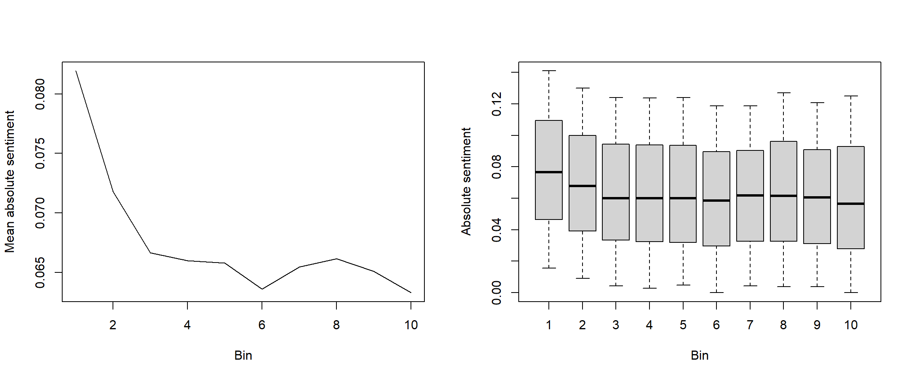
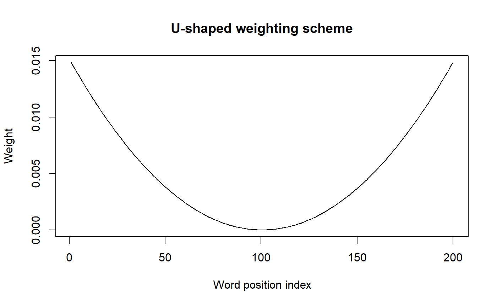

vignettes/isa.Rmd
isa.RmdThe sentometrics package introduces simple functions to quickly compute the sentiment of texts within a corpus. This easy-to-use approach does not prevent more advanced analysis, and the sentometrics functions remain a solid choice for cutting-edge research. This tutorial will present how to go beyond the basic sentometrics settings in order to analyse the intratextual sentiment structure of texts.
Does the position of positive and negative words within a text matter? That’s a question investigated by Boudt & Thewissen, 2019 during their research regarding sentiment implied by CEO letters. Based on a large dataset of letters, they analyze how sentiment-bearing words are positioned within the text. They find that CEOs tend to emphasize sentiment at the beginning and the end of their letter, in the hopes of leaving a positive impression to the reader.
Their results confirm generally accepted theories of linguistics saying that readers remember best the first (primacy effect) and the last (recency effect) portions of a text, and that the end of the text contributes the most to the reader’s final feeling.
One can wonder whether other types of texts follow a similar structure? Indeed, the world is full of different text media, from Twitter posts to news articles, and most of them are less cautiously written than CEO letters. Let’s investigate together one of these with the help of the sentometrics package!
Let’s load the required packages first.
library("rio") # package for extracting data from GitHub library("data.table") # package bringing in the data.table machinery library("quanteda") # package useful for text and document manipulation library("sentometrics") # package containing sentiment computation tools library("lexicon") # package with multiple lexicons
In this tutorial, we will use a slight variation from the built-in usnews object from the sentometrics package. We would like to compare our computed sentiment measure against some benchmark, but the built-in usnews does not include one. Fortunately, we processed a new dataset usnews2 containing a benchmark just for you! It can be retrieved directly from GitHub using the rio package.
usnews2 <- import("https://raw.githubusercontent.com/odelmarcelle/public/master/usnews2/usnews2.RData") table(usnews2$s)
##
## -1 1
## 605 344The variable s indicates whether the news is more positive or negative, based on an expert’s opinion. We are going to try to predict this value at the end of the tutorial.
We can already prepare a sento_corpus and a sento_lexicon for our future sentiment computation. For the sento_corpus, we will also create a dummyFeature filled with 1’s. Since sentiment computations are multiplied by the features of a sento_corpus, we want this dummy feature to observe the whole corpus’s sentiments. This dummyFeature is created by default whenever there’s no feature at the creation of the sento_corpus.
Finally, we remove the feature s from the sento_corpus, as we do not need it for sentiment computation.
usnews2Sento <- sento_corpus(usnews2) # note that the feature 's' is automatically re-scaled from {-1;1} to {0;1} usnews2Sento <- add_features(usnews2Sento, data.frame(dummyFeature = rep(1, length(usnews2Sento)))) docvars(usnews2Sento, "s") <- NULL # R-removing the feature
We will use a single lexicon for this analysis, the combined Jockers & Rinker lexicon, obtained from the lexicon package. However, we will prepare a second and different version of this lexicon where the sentiments assigned to words are all positive, regardless of their original signs. This second lexicon will be useful to better detect the sentiment intensity conveyed.
We used the data.table operator [] to create the second lexicon in a very efficient way. Most sentometrics objects are based on data.table and this allows to perform complex data transformations. If this is the first time you are seeing the data.table way of using [], we recommend you to have a look at their Introduction vignette and enjoy this powerful tool!
lex <- lexicon::hash_sentiment_jockers_rinker sentoLexicon <- sento_lexicons(list(baseLex = lex, absoluteLex = lex[, .(x = x, y = abs(y))])) lapply(sentoLexicon, head)
## $baseLex
## x y
## 1: abandon -0.75
## 2: abandoned -0.50
## 3: abandoner -0.25
## 4: abandonment -0.25
## 5: abandons -1.00
## 6: abducted -1.00
##
## $absoluteLex
## x y
## 1: abandon 0.75
## 2: abandoned 0.50
## 3: abandoner 0.25
## 4: abandonment 0.25
## 5: abandons 1.00
## 6: abducted 1.00sentometrics
compute_sentiment() is at the base of sentiment analysis with sentometrics. That’s also the function we are going to use to analyse intratextual sentiment. This requires, however, to play with the most advanced features of the function. Before doing that, let us review the different computation settings to really understand what’s going on.
When using the default settings (i.e., only specifying the how argument), the sentiment for each word within a text will be determined according to the provided lexicons. These word sentiments are then aggregated using the method defined by the how argument, aggregating up to the document level to form a sentiment value for the document.
sentiment <- compute_sentiment(usnews2Sento, sentoLexicon, how = "proportional") head(sentiment)
## id date word_count baseLex--dummyFeature absoluteLex--dummyFeature
## 1: 830981632 1971-01-12 192 -0.010156250 0.10130208
## 2: 830981642 1971-08-04 243 0.036831276 0.08539095
## 3: 830981666 1971-08-24 326 0.007515337 0.03849693
## 4: 830981681 1972-01-28 158 0.025316456 0.09493671
## 5: 830981684 1973-02-15 174 -0.004022989 0.03160920
## 6: 830981702 1973-05-31 227 0.009251101 0.06784141In this case, the how = "proportional" simply sum words’ sentiments then divide it by the number of words in a document. The different settings for how can be accessed using the get_hows() function. We are going to present the use of a more complex setting at the end of this tutorial.
do.sentence = TRUE - from words to sentences sentimentsA drastic change in the behaviour of compute_sentiment() can be induced by specifying do.sentence = TRUE in the function call. If true, the output of compute_sentiment will no longer return a sentiment value for each document, but each sentence. Sentiment values within each sentence are still computed using the method provided in the how argument, but the function stops there.
sentiment <- compute_sentiment(usnews2Sento, sentoLexicon, how = "proportional", do.sentence = TRUE) head(sentiment)
## id sentence_id date word_count baseLex--dummyFeature absoluteLex--dummyFeature
## 1: 830981632 1 1971-01-12 28 -0.09285714 0.12142857
## 2: 830981632 2 1971-01-12 37 0.01081081 0.01081081
## 3: 830981632 3 1971-01-12 6 -0.01666667 0.15000000
## 4: 830981632 4 1971-01-12 33 0.01666667 0.04696970
## 5: 830981632 5 1971-01-12 16 -0.04687500 0.07812500
## 6: 830981632 6 1971-01-12 24 0.04166667 0.06250000The new column sentence_id in the output is used to identify the sentences of a single document. This result can be used as-is for analysis at the sentence level, or sentences sentiments can be aggregated to obtain documents sentiments, as in the default setting. One way to aggregate sentences sentiments up to documents sentiments is to use the aggregate() method of sentometrics.
do.sentence and tokens
Analyzing the sentiment of individual sentences is already a nice approach to observe intra-document sentiment, but sometimes it is better to define a custom container for which sentiments are going to be computed. This is the approach used by Boudt & Thewissen, 2019, where they define bins, equal-sized containers of texts. The idea is to divide a document into equal-sized portion and to analyze each of them independently. Let’s say we decide to split a document of 200 words into 10 bins. To do so, we are going to store the first 20 words in the first bin, the words 21 to 40 in the second bin, and so on… This way, each bin will account for 10% of the text. By repeating the procedure for all texts of a corpus, we can easily compare specific text portions (e.g., the first 10%) between multiples documents.
Let’s split our documents into sets of bins. The first step is to obtain a vector of characters for each document. This is done easily with the tokens function from the quanteda (remember that sentometrics objects are also based on quanteda, letting us free to use most functions from this package).
usnews2Toks <- tokens(usnews2Sento, remove_punct = TRUE) usnews2Toks <- tokens_tolower(usnews2Toks) # changing all letters to lowercase is optional but recommended
We now have a list of character vectors, one for each document. The second step is to split each of these vectors into a list of vectors, one vector representing one bin. The final structure will look like:
This can be done with the help of the convenient function parallel::splitIndices(). Usually intended to split tasks in a parallel computing setup, this function does exactly what we need: it splits a vector 1:N into a list of k vectors. We use it to split the indices of each character vector in usnews2Toks.
nBins <- 10 usnews2Bins <- list(1:nBins) for(i in 1:length(usnews2Toks)){ usnews2Bins[[i]] <- lapply(parallel::splitIndices(length(usnews2Toks[[i]]), nBins), function(x){usnews2Toks[[i]][x]}) } names(usnews2Bins) <- names(usnews2Toks) head(usnews2Bins[[1]], 2)
## [[1]]
## [1] "a" "mild" "stock" "rally" "fizzled" "late"
## [7] "today" "overwhelmed" "by" "computerized" "selling" "strategies"
## [13] "and" "anxiety" "that" "has" "afflicted" "investors"
## [19] "since" "the"
##
## [[2]]
## [1] "historic" "market" "collapse" "exactly" "six" "months" "ago" "the"
## [9] "dow" "jones" "average" "of" "30" "blue-chip" "stocks" "up"
## [17] "more" "than" "32"Looking good! The last step is now to get the sentiment value for each bin. Implementing this approach with compute_sentiment() require a little ‘cheat’! We’re going to trick compute_sentiment() into believing that bins are actually sentences. This is done using the tokens argument in the function call and passing to it the usnews2Bins object we just created. The function will treat each character vector in usnews2Bins as a sentence and compute sentiment for it.
sentiment <- compute_sentiment(usnews2Sento, sentoLexicon, how = "proportional", do.sentence = TRUE, tokens = usnews2Bins) head(sentiment)
## id sentence_id date word_count baseLex--dummyFeature absoluteLex--dummyFeature
## 1: 830981632 1 1971-01-12 20 -0.11250000 0.11250000
## 2: 830981632 2 1971-01-12 19 -0.01842105 0.06052632
## 3: 830981632 3 1971-01-12 19 0.02105263 0.02105263
## 4: 830981632 4 1971-01-12 20 0.03500000 0.08500000
## 5: 830981632 5 1971-01-12 19 -0.01315789 0.03947368
## 6: 830981632 6 1971-01-12 19 -0.03947368 0.06578947In this case, the sentence_id simply refers to the number of the bin. Let’s now see what we can do with the bins we just computed.
In their analysis of CEO letters, Boudt & Thewissen, 2019 identified an intratextual sentiment structure: CEOs would deliberately emphasize sentiments at the beginning and end of the letter, and pay attention to leave out a positive message and the end. Our dataset of news articles is radically different from these letters so we don’t expect to find a similar structure. However, based on our knowledge of news, we can formulate a hypothesis: news articles tend to use strong sentiments in their headlines to attract readers’ eyes. Let’s investigate this using our bins!
We expect that the first bin in each article presents on average more sentiment than in the rest of the text. Since news can either be positive or negative, it will easier to identify sentiment intensity using the absolute value lexicon prepared earlier. This way, we avoid the cancelling effect between positive and negative sentiments. Simply plotting the mean sentiment values for each bin across documents can give us some insight on the intratextual structure. Once again, we rely on data.table’s [] operator to easily group sentiment values per sentence_id (remember, these represent the bin number!). In addition to this, a boxplot can be useful to ensure that the mean sentiments are not driven by extreme outliers.
par(mfrow = c(1,2)) plot(sentiment[, .(s = mean(`absoluteLex--dummyFeature`)), by = sentence_id], type = "l", ylab = "Mean absolute sentiment", xlab = "Bin") boxplot(sentiment$`absoluteLex--dummyFeature` ~ sentiment$sentence_id, ylab = "Absolute sentiment", xlab = "Bin", outline = FALSE, range = 0.5)

We can see that the first two bins of articles tend to show a larger absolute sentiment on average. This gives some credit to our initial hypothesis that news headlines contain more sentiment.
Another way to study the intratextual sentiment structure is to compute the Herfindahl-Hirschman Index across all documents. This is a popular index of concentration, mainly used in measuring competition between firms on a given market. A value close to 0 indicates large dispersion between bins while a value of 1 indicated that all sentiments are found in a single bin. The formula to compute the index of a single document is:
\[H = \sum_{b=1}^{B} s_b^2\] where \(b\) are bin indexes and \(s\) the proportion of the document sentiment found in a single bin.
Using data.table, we can easily compute the index for the whole set of documents.
herfindahl <- sentiment[, .(s = `absoluteLex--dummyFeature`/sum(`absoluteLex--dummyFeature`)), by = id] herfindahl <- herfindahl[, .(h = sum(s^2)), by = id] mean(herfindahl$h)
## [1] 0.1445487A result that shows there is concentration toward some bins! Note that this result is heavily dependent on the number of bins considered. Only index values computed with the same number of bins should be compared. Let’s show the index’s value if sentiments were uniformly positioned within the text:
x <- data.table(id = sentiment$id, s = rep(1, nrow(sentiment))) herfindahl <- x[, .(s = s/sum(s)), by = id] herfindahl <- herfindahl[, .(h = sum(s^2)), by = id] mean(herfindahl$h)
## [1] 0.1The sentometrics comes with a lot of different weightings methods to compute sentiment and aggregate them into document sentiments or even time series. These weightings methods can be accessed with the functions get_hows.
get_hows()## $words
## [1] "counts" "proportional" "proportionalPol"
## [4] "proportionalSquareRoot" "UShaped" "inverseUShaped"
## [7] "exponential" "inverseExponential" "TFIDF"
##
## $docs
## [1] "equal_weight" "proportional" "inverseProportional" "exponential"
## [5] "inverseExponential"
##
## $time
## [1] "equal_weight" "almon" "beta" "linear" "exponential" "own"So far, we’ve been using the proportional method from the $words set. The $words set contains the valid options for the hows argument of compute_sentiment(). The other two sets are used within the aggregate() function, to respectively aggregate sentences sentiment into documents or document sentiments into time series.
With our earlier computation of sentiments using do.sentences = TRUE, we computed sentiments for sentences and bins. Now, for our next application, we need to aggregate these sentences and bins sentiments into documents sentiments. One option is to aggregate() using one of the methods shown above. Note the use of do.full = FALSE to stop the aggregation at the document level (otherwise, it would directly aggregate up to a time series).
docsSentiment <- aggregate(sentiment, ctr_agg(howDocs = "equal_weight"), do.full = FALSE) lapply(list(sentiment = sentiment, docsSentiment = docsSentiment), head)
## $sentiment
## id sentence_id date word_count baseLex--dummyFeature absoluteLex--dummyFeature
## 1: 830981632 1 1971-01-12 20 -0.11250000 0.11250000
## 2: 830981632 2 1971-01-12 19 -0.01842105 0.06052632
## 3: 830981632 3 1971-01-12 19 0.02105263 0.02105263
## 4: 830981632 4 1971-01-12 20 0.03500000 0.08500000
## 5: 830981632 5 1971-01-12 19 -0.01315789 0.03947368
## 6: 830981632 6 1971-01-12 19 -0.03947368 0.06578947
##
## $docsSentiment
## id date word_count baseLex--dummyFeature absoluteLex--dummyFeature
## 1: 830981632 1971-01-12 194 -0.010342105 0.10005263
## 2: 830981642 1971-08-04 243 0.040703704 0.08505000
## 3: 830981666 1971-08-24 336 0.008021390 0.04153298
## 4: 830981681 1972-01-28 167 0.025422794 0.09031250
## 5: 830981684 1973-02-15 181 -0.004239766 0.03386940
## 6: 830981702 1973-05-31 224 0.008366271 0.07360562But as we have seen, some bins are more likely to present strong sentiment values than other, notably the first bin containing the headline of a news article. In this case, an equal weighting between bins will give as much importance to the inflated headline as the rest of the text. Maybe would it better to give less importance to the first bin instead, which would then limit its effect on the final document sentiment?
This is exactly the situation where we would like to test a specific weighting scheme! Say that instead of giving 10% importance to each bin in the document sentiment computation, we would give only about 5% importance to the first one and share the rest between the remaining bins. Sadly, sentometrics does not directly provide us with the tool for this kind of computation, we will need to create our weighting scheme and aggregate by hands. Luckily, the use of data.table makes these customisations painless.
First, we define our customized weights for bins:
## $sum
## [1] 1
##
## $w
## [1] 0.05263158 0.10526316 0.10526316 0.10526316 0.10526316 0.10526316 0.10526316 0.10526316
## [9] 0.10526316 0.10526316Second, we can create a function that will aggregate bins based on our customized weights. This is simply the sum of element-wise vector multiplications.
## [1] 1.75Third, we need to aggregate by hand using this weighting scheme, taking advantage of data.table operations. Things are slightly more complex here. Let’s describe what this transformation does.
Since we’re aggregating for each document, we set by = id, this specifies the groups for the other operations. Since there’s only one date for each id, using by = .(id, date) simply keeps the date column in the output.
Concerning the intra-groups aggregation (i.e., aggregating the bins of each document), there are two operations to perform. On one hand, we compute the sum of word_count in each bin, to obtain the number of words in the document. On the other hand, we apply the function aggregate_bins to a number of columns. .SD is a special symbol of data.table that specify a subset on which an operation should be performed. In this case, the subset represented by .SD is simply the columns stored in .SDcols. In simple words, this will apply the aggregate_bins function to each column, starting from column 5 (since columns 1 to 4 are id, date, sentence_id and word_counts).
docsSentiment <- sentiment[, c(word_count = sum(word_count), lapply(.SD, aggregate_bins, w = w)), by = .(id, date), .SDcols = tail(names(sentiment), -4)] head(docsSentiment)
## id date word_count baseLex--dummyFeature absoluteLex--dummyFeature
## 1: 830981632 1971-01-12 194 -0.004965374 0.09939751
## 2: 830981642 1971-08-04 243 0.035614035 0.08657895
## 3: 830981666 1971-08-24 336 0.006670419 0.03841824
## 4: 830981681 1972-01-28 167 0.025212848 0.08732585
## 5: 830981684 1973-02-15 181 -0.002554632 0.03062481
## 6: 830981702 1973-05-31 224 0.004722280 0.06538382On top of that, the output of this transformation is still a correct sentiment object and can be used in other sentometrics applications!
class(docsSentiment)
## [1] "sentiment" "data.table" "data.frame"Let’s now put all of this in a concrete example. We’ve been using a modified dataset usnews2 since the beginning because we wanted to have a variable identifying whether the document is positive or negative. Our goal is now to try to predict this value.
To do so, we will consider 4 different approaches, in the form of four different weighting methods. We will study which weighting is the best to predict document’s sentiments. The four weighting methods will be:
The U-shaped weighting is something we haven’t seen before. This is a weighting method for words as per get_words() that gives more weight to the beginning and end of a text. Its exact formulation can be found at the end of the Sentometrics vignette, along with the other available weighting. This weighting scheme can be visualized as follows:
Qd <- 200 # number of words in the documents i <- 1:Qd ushape <- (i - (Qd+1)/2 )^2 ushape <- ushape/sum(ushape) plot(ushape, type = 'l', ylab = "Weight", xlab = "Word position index", main = "U-shaped weight scheme")

Let’s compute sentiments with the four different weighting schemes. We will store the results in a list, sentimentValues.
sentimentValues <- list() sentimentValues$default <- compute_sentiment(usnews2Sento, sentoLexicon, how = "proportional") sentimentValues$uShaped <- compute_sentiment(usnews2Sento, sentoLexicon, how = "UShaped") sentimentValues$sentences <- compute_sentiment(usnews2Sento, sentoLexicon, how = "proportional", do.sentence = TRUE) sentimentValues$bins <- compute_sentiment(usnews2Sento, sentoLexicon, tokens = usnews2Bins, how = "proportional", do.sentence = TRUE) lapply(sentimentValues, head, n=3)
## $default
## id date word_count baseLex--dummyFeature absoluteLex--dummyFeature
## 1: 830981632 1971-01-12 192 -0.010156250 0.10130208
## 2: 830981642 1971-08-04 243 0.036831276 0.08539095
## 3: 830981666 1971-08-24 326 0.007515337 0.03849693
##
## $uShaped
## id date word_count baseLex--dummyFeature absoluteLex--dummyFeature
## 1: 830981632 1971-01-12 192 -0.0345837756 0.13075232
## 2: 830981642 1971-08-04 243 0.0264033780 0.09045472
## 3: 830981666 1971-08-24 326 0.0006524499 0.02734571
##
## $sentences
## id sentence_id date word_count baseLex--dummyFeature absoluteLex--dummyFeature
## 1: 830981632 1 1971-01-12 28 -0.09285714 0.12142857
## 2: 830981632 2 1971-01-12 37 0.01081081 0.01081081
## 3: 830981632 3 1971-01-12 6 -0.01666667 0.15000000
##
## $bins
## id sentence_id date word_count baseLex--dummyFeature absoluteLex--dummyFeature
## 1: 830981632 1 1971-01-12 20 -0.11250000 0.11250000
## 2: 830981632 2 1971-01-12 19 -0.01842105 0.06052632
## 3: 830981632 3 1971-01-12 19 0.02105263 0.02105263Before going further, we need to aggregate the two last results to a document level sentiment measure. We are going to aggregate sentences using the aggregate() function while we will repeat the same operation as before to compute the bins aggregation with the custom weights.
sentimentValues$sentences <- aggregate(sentimentValues$sentences, ctr_agg(howDocs = "equal_weight"), do.full = FALSE) sentimentValues$bins <- sentimentValues$bins[, c(word_count = sum(word_count), lapply(.SD, aggregate_bins, w = w)), by = .(id, date), .SDcols = tail(names(sentiment), -4)] lapply(sentimentValues[3:4], head, n=3)
## $sentences
## id date word_count baseLex--dummyFeature absoluteLex--dummyFeature
## 1: 830981632 1971-01-12 202 -0.016162828 0.11392764
## 2: 830981642 1971-08-04 251 0.049212232 0.09111569
## 3: 830981666 1971-08-24 349 0.009439859 0.04566347
##
## $bins
## id date word_count baseLex--dummyFeature absoluteLex--dummyFeature
## 1: 830981632 1971-01-12 194 -0.004965374 0.09939751
## 2: 830981642 1971-08-04 243 0.035614035 0.08657895
## 3: 830981666 1971-08-24 336 0.006670419 0.03841824Finally, what remains to do is test our results against the variable s from usnews2. Since we know the number of positive and negative news in s, we can quickly and in a naive way measure the accuracy by ordering the documents by sentiment values.
table(usnews2$s)
##
## -1 1
## 605 344Thus, we classify the 605 documents with the lowest sentiment in each measure as negative, and the remaining documents as positive.
Let’s start by adding the s variable to the existing measures by merging each of them with usnews2. The use of lapply allows to do the operation of all measures at once.
sentimentValues <- lapply(sentimentValues, function(x) merge.data.frame(x, usnews2[, c("id","s")])) lapply(sentimentValues, head, n = 3)
## $default
## id date word_count baseLex--dummyFeature absoluteLex--dummyFeature s
## 1 830981632 1971-01-12 192 -0.010156250 0.10130208 -1
## 2 830981642 1971-08-04 243 0.036831276 0.08539095 -1
## 3 830981666 1971-08-24 326 0.007515337 0.03849693 1
##
## $uShaped
## id date word_count baseLex--dummyFeature absoluteLex--dummyFeature s
## 1 830981632 1971-01-12 192 -0.0345837756 0.13075232 -1
## 2 830981642 1971-08-04 243 0.0264033780 0.09045472 -1
## 3 830981666 1971-08-24 326 0.0006524499 0.02734571 1
##
## $sentences
## id date word_count baseLex--dummyFeature absoluteLex--dummyFeature s
## 1 830981632 1971-01-12 202 -0.016162828 0.11392764 -1
## 2 830981642 1971-08-04 251 0.049212232 0.09111569 -1
## 3 830981666 1971-08-24 349 0.009439859 0.04566347 1
##
## $bins
## id date word_count baseLex--dummyFeature absoluteLex--dummyFeature s
## 1 830981632 1971-01-12 194 -0.004965374 0.09939751 -1
## 2 830981642 1971-08-04 243 0.035614035 0.08657895 -1
## 3 830981666 1971-08-24 336 0.006670419 0.03841824 1Since we used merge.data.frame, we need to convert the objects back to data.table and then we can order each of these tables.
sentimentValues <- lapply(sentimentValues, as.data.table) # converting back to data.table sentimentValues <- lapply(sentimentValues, function(x) x[order(`baseLex--dummyFeature`)]) # order based on the baseLex sentiment values lapply(sentimentValues, head, n = 3)
## $default
## id date word_count baseLex--dummyFeature absoluteLex--dummyFeature s
## 1: 830981961 1976-02-20 123 -0.06707317 0.10691057 -1
## 2: 842616972 2011-11-23 206 -0.05412621 0.12305825 -1
## 3: 842616769 2010-11-20 186 -0.05322581 0.08978495 -1
##
## $uShaped
## id date word_count baseLex--dummyFeature absoluteLex--dummyFeature s
## 1: 842613535 1991-05-02 213 -0.07650705 0.10549752 1
## 2: 830981961 1976-02-20 123 -0.07607828 0.09651269 -1
## 3: 842615597 2003-11-24 202 -0.07382476 0.10713842 -1
##
## $sentences
## id date word_count baseLex--dummyFeature absoluteLex--dummyFeature s
## 1: 830981961 1976-02-20 125 -0.07707298 0.12142702 -1
## 2: 830984376 1987-12-17 225 -0.06662902 0.10809238 -1
## 3: 842614104 1994-02-18 205 -0.06074249 0.09806308 -1
##
## $bins
## id date word_count baseLex--dummyFeature absoluteLex--dummyFeature s
## 1: 830981961 1976-02-20 127 -0.07186235 0.10620783 -1
## 2: 842616769 2010-11-20 186 -0.05663281 0.08476454 -1
## 3: 842616972 2011-11-23 208 -0.04818296 0.11309524 -1Finally, we compute the accuracy by counting the number of times the value of s is -1 in the first 605 documents and the number of time the value is 1 in the last 344 documents. We obtain a balanced accuracy measure by combining the true negative rate and the true positive rate.
index <- table(usnews2$s)[[1]] rates <- cbind(trueNegativeRate = sapply(sentimentValues, function(x){sum(x[1:index, s == -1]) / sum(x[, s == -1])}), truePositiveRate = sapply(sentimentValues, function(x){sum(x[(1 + index):nrow(x), s == 1]) / sum(x[, s == 1])})) cbind(rates, balancedAccuracy = (rates[,1] + rates[,2]) / 2 )
## trueNegativeRate truePositiveRate balancedAccuracy
## default 0.7256198 0.5174419 0.6215308
## uShaped 0.7289256 0.5232558 0.6260907
## sentences 0.7256198 0.5174419 0.6215308
## bins 0.7272727 0.5203488 0.6238108In this case, the U-shaped weighting performs best but we can already see the improvement brought by our custom weights in comparison with the default settings. In a supervised learning setting, it can be useful to optimize a custom weights scheme on a training dataset. An example of such a model can be found in the paper of Boudt & Thewissen, 2019, where bins weights are optimized to predict firm performance.
That’s the end of this tutorial. Want to go further? Have a try creating weird bins! They actually don’t have to be of equal size, their specification is up to anyone. Also, keep in mind that we have only covered news articles in this tutorial, which is not representative of all type of texts, feel free to investigate how sentiments are positioned within different types of documents.